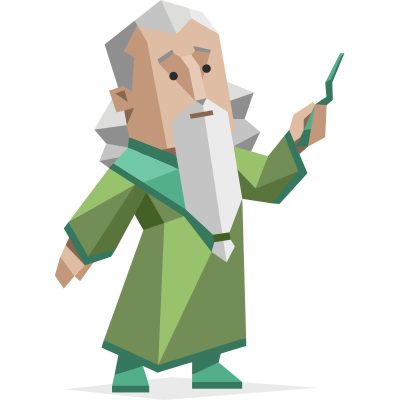

INFJ
清晰度：高度清晰 | 稀有度：全球 1.5%
核心维度得分
情境图谱
日常状态
在没有外界压力的日常生活中，你呈现出一种安静、内敛且极度需要私人空间的特质。你喜欢沉浸在自己的精神世界里，可能是阅读、冥想或是无目的地散步。虽然看似随和，但你的内心有着不可撼动的秩序感。你会把周围的人和事在大脑中进行细致的分类，并保持着一种“友善但疏离”的社交距离。
工作状态
一旦进入工作状态，你的“J”属性会全面爆发。你不仅目标感极强，而且能迅速洞察项目的深层意义和团队成员的潜在情绪。你通常不喜欢在台前发号施令，而是作为团队的“精神锚点”或幕后推手，用你对未来的愿景和强大的逻辑说服力来引导项目走向。你追求完美，容不得半点敷衍。
社交状态
一旦进入社交状态，你的“J”属性会全面爆发。你不仅目标感极强，而且能迅速洞察项目的深层意义和团队成员的潜在情绪。你通常不喜欢在台前发号施令，而是作为团队的“精神锚点”或幕后推手，用你对未来的愿景和强大的逻辑说服力来引导项目走向。你追求完美，容不得半点敷衍。
人格深度解读
认知方式：直觉先行 (Ni)
你习惯透过表象看本质。当别人还在关注具体的细节和数据时，你的大脑已经自动开始寻找事物背后的模式、规律以及未来的发展走向。这种强大的内倾直觉让你经常能产生“预感”或顿悟，这并非毫无根据的猜测，而是你的大脑在潜意识中飞速处理海量信息后得出的最优解。
决策风格：情感温度 (Fe)
尽管你的内心有着非常理性的分析机制，但在做最终决策时，群体的和谐与你自身的价值观往往会占据主导地位。你极度排斥冲突，总是试图找到一个“对所有人都好”的解决方案。这种外倾情感让你成为了天生的倾听者和疗愈者，但同时也容易让你背负过多他人的情绪垃圾。
能量来源：内向汲取 (I)
与他人互动会迅速消耗你的能量槽，即使是在你感到愉悦的社交场合。你必须通过长时间的独处、深度的思考以及与自己内心的对话来重新充满电。对你而言，孤独从来不是一种惩罚，而是让你能够保持清醒和恢复活力的必需品。
核心优势
-
深度洞察力： 能够轻易看穿表面现象，直达事物或人性的核心本质，极具前瞻性。
-
坚定的执行力： 一旦认定了某个符合自身价值观的理想，就会展现出惊人的毅力和高度的自律。
-
悲天悯人的共情力： 能够深刻体会他人的痛苦，是身边人最值得信赖的情感避风港。
潜在盲点
-
容易过度内耗： 经常因为别人的情绪或者无法改变的社会现状而惩罚自己，精神极易疲惫。
-
对他人的期望过高： 习惯用理想化的滤镜看待伴侣或团队，一旦对方暴露出人性的弱点，就会感到极度失望。
-
忽视现实细节： 过于关注宏大的未来愿景，有时会忽略眼前的世俗琐事和基本的自我照顾。
自我认知深度剖析
1. 你如何看待自己和世界
作为一个INFJ，你常常感到自己游离于世界之外，像是一个清醒的旁观者。你觉得世界是一个充满隐喻和深层意义的庞大网络，每一个表象背后都隐藏着某种必然的联系。你对人类的苦难和复杂性有着近乎本能的共情，这让你在面对社会的诸多不公或冷漠时，内心会经历剧烈的挣扎与矛盾。一方面你无比热爱人类这个宏大的概念，愿意为之付出心血；另一方面，你又对具体的个体保持着高度的警惕和疏离感，因为现实的粗糙经常让你内心的乌托邦面临坍塌。
2. 人际与沟通：清醒的变色龙
在沟通中，你表现出极强的适应性。你能迅速感知对方的情绪底色，并切换到对方最舒适的沟通频道，这让你在社交场合中游刃有余，甚至被误认为是外向者（E型）。然而，这种“社交面具”是极其消耗能量的。在私人领域，你的标准严苛得惊人。你渴望灵魂深处的对话，极度厌恶肤浅的闲聊（Small Talk）。因此，你会发现在不同场合自己仿佛变了个人：对外温和体贴，对内却有着极高的精神洁癖和不可逾越的边界。
职业探索与规划
职场多维画像
你是一个内驱力极强的完美主义者。只要工作内容符合你的价值观，你几乎不需要外界的监督就能产出极高质量的结果。你习惯在脑海中构建完整的框架后再动手，绝不容许半点草率。
你是团队里的“知心粘合剂”和“远见者”。你总能敏锐地察觉到团队内部的情绪暗流，并在冲突爆发前巧妙化解。同时，你能在团队迷茫时，指出最具战略意义的长远方向。
作为管理者，你是典型的“愿景驱动型”和“仆人式领导”。你不喜欢用权威压人，而是倾向于激发下属的内在潜力。你需要注意的是，有时过于顾及下属感受，会导致决策不够果断干脆。
工作环境鉴别
✨ 灵魂契合的环境
重视企业社会责任（CSR）、提倡人文关怀、允许独立思考和深度创作的空间。你需要安静的物理环境以及价值观高度一致的同事。
高度消耗的环境
充斥着机械重复劳动、办公室政治激烈、只看重短期KPI而忽视道德底线的丛林法则型企业，会让你迅速陷入抑郁和枯竭。
职业建议
推荐方向 (Top 3)
1. 心理咨询/疗愈师：完美发挥你深度的共情力和洞察力。
2. 作家/内容创作者：将丰富的精神世界转化为文字输出。
3. 组织发展/HRBP：在复杂的组织架构中平衡人性与制度。
向上发展箴言
停止过度理想化。职场就是利益交换的场所，学会给自己的善良和共情设立“止损线”。将你宏大的愿景拆解成可视化的KPI，用世俗能听懂的语言去推销你的伟大想法，这是你进阶的必修课。
恋爱与亲密关系
1. 亲密关系中的你
你追求的是绝对的灵魂契合（Soulmate）。对你来说，身体的亲密必须建立在精神层面的深刻理解与共鸣之上。你无法忍受现代快餐式的爱情、肤浅的试探或任何形式的欺骗。在关系中，你极度忠诚且愿意付出，但同时也设立了极高的隐形门槛。
2. 你的恋爱表达方式
你很少把“爱”挂在嘴边，表面上甚至可能显得有些被动和克制。但实际上，你的内心早已为对方写下了万字长文。你的爱意体现在无微不至的细节观察、对伴侣情绪的托底，以及将对方纳入你长远未来的坚定规划中。你的爱是深沉且排他的。
3. 极易陷入的循环
你很容易陷入“拯救者情结”。你常常会被那些内心有创伤、或者看起来需要帮助的伴侣所吸引，试图用自己的爱去治愈对方。然而，这往往会导致关系失衡。当对方无法达到你理想化的期望时，你会在内心默默减分，直到某一天突然触发“Door Slam”（关门机制），彻底且冷酷地抽离。
天生一对 (高频匹配)
ENTP / ENFP
他们的外向和发散性能完美照亮你的内心宇宙。